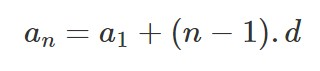
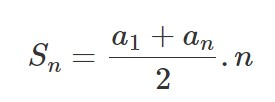
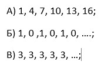

Аритметична прогресия!
В този урок ще се запознаем с един много често срещан клас редици. А именно аритметичните прогресии. Обикновено те са много лесни за забелязване. Това са редици, при които всеки член е по-голям от члена преди него с едно постоянно число . Целта ми е да установя кои от тези редици са аритметични прогресии. И след това, за да придобием известен опит с някои от означенията за редици, искам да ги определим или като функции, зададени явно за члена, който търсим, или като рекурентни определения. Първо, дадено е, че за една аритметична прогресия всеки член е по-голям от предишния с фиксирана величина.
Аритметичната прогресия, както геометричната, с която ще се ззапознаете в другия урок си има теореми и формули. Аритметична прогресия наричаме, числова редица в която всеки член след първия се получава, като към предходния му член се прибави едно и също число.  Формулата за сборът на членовете в аритметичната прогресия е следната: 
Числото, което се прибавя към всеки член на една прогресия, за да се получи следващия ѝ член, се нарича разлика на прогресията. Бележи се с английската буква d.

-
При d>0 (редицата (а)) всеки член след първия е по-голям от предходния т.е. аритметичната прогресия е растяща.
-
При d<0 (редицата(б)) всеки член след първия е по-малък от предходния т.е. аритметичната прогресия е намаляваща.
-
При d=0 (редицата(в)) всички членове на аритметичната прогресия са равни помежду си.
Примерни задачи